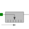
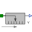

PartialAbsoluteSensorDevice to measure a single absolute flange variable |

|
Information
This information is part of the Modelica Standard Library maintained by the Modelica Association.
This is the superclass of a 1D translational component with one flange and one output signal in order to measure an absolute kinematic quantity in the flange and to provide the measured signal as output signal for further processing with the Modelica.Blocks blocks.
Connectors (1)
| flange |
Type: Flange_a Description: Flange to be measured (flange axis directed in to cut plane, e. g. from left to right) |
|---|
Extended by (3)
|
Modelica.Mechanics.Translational.Sensors Ideal sensor to measure the absolute acceleration |
|
|  |
Modelica.Mechanics.Translational.Sensors Ideal sensor to measure the absolute velocity |
|
Modelica.Mechanics.Translational.Sensors Ideal sensor to measure the absolute position |